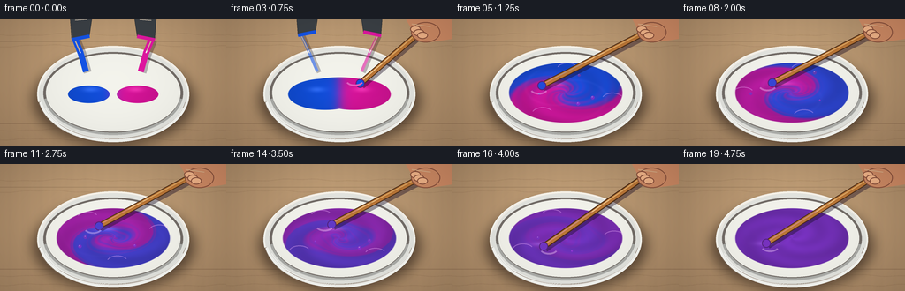
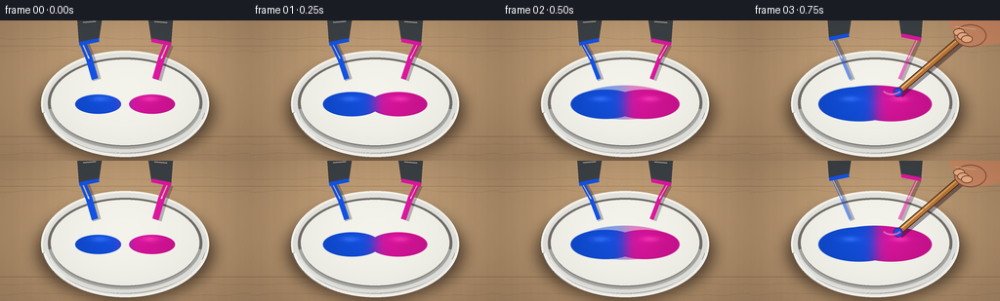

CODING AGENTS AS PIXEL WORLD MODELS
traex/GPT-5.6-Sol · material_0004
点击播放 · 原生 RGB 像素
逐轮保存的候选
回放视频、检查图与代码变化。
每份候选均可单独播放。实际图片检查记录在下方工具轨迹中。
候选 01播放与检查图
点击播放 · 原生 RGB 像素

展开代码变化
--- 上一保存版本
+++ 本次保存版本
@@ -0,0 +1,228 @@
+from pathlib import Path
+import math
+import numpy as np
+from PIL import Image, ImageDraw, ImageFilter
+import artifact_io
+
+# Deterministic procedural animation: two equal paint pours become a rapidly stirred purple mixture.
+W, H, N = 256, 144, 20
+S = 4
+w, h = W*S, H*S
+rng = np.random.default_rng(1407)
+Y, X = np.mgrid[0:h, 0:w]
+xf, yf = X/S, Y/S
+
+# fixed fine-grain texture keeps the material tactile without frame-to-frame shimmer
+noise_small = rng.normal(0, 1, (H, W))
+noise_img = Image.fromarray(np.uint8(np.clip(noise_small*28+128,0,255))).resize((w,h), Image.Resampling.BICUBIC).filter(ImageFilter.GaussianBlur(2*S))
+noise = (np.asarray(noise_img).astype(float)-128)/28
+
+def soft_mask(v, edge=.012):
+ return np.clip(.5 - v/edge, 0, 1)
+
+def composite(base, layer, mask):
+ a = np.asarray(mask, dtype=float)
+ if a.ndim == 2: a = a[...,None]
+ return np.uint8(np.clip(np.asarray(base)*(1-a) + np.asarray(layer)*a, 0, 255))
+
+def ellipse_mask(cx,cy,rx,ry,feather=.8):
+ d=np.sqrt(((xf-cx)/rx)**2+((yf-cy)/ry)**2)-1
+ return soft_mask(d, feather/min(rx,ry))
+
+def draw_background():
+ # warm studio worktop, subtle plank seams and pools of diffuse light
+ bg=np.zeros((h,w,3),float)
+ glow=np.exp(-((xf-130)**2/13000+(yf-40)**2/5000))
+ grain=.7*np.sin(xf*.38)+.45*np.sin(xf*.89+1.1)+noise*.65
+ bg[...,0]=171+19*glow+grain
+ bg[...,1]=139+18*glow+grain*.75
+ bg[...,2]=105+14*glow+grain*.45
+ im=Image.fromarray(np.uint8(np.clip(bg,0,255)),'RGB')
+ d=ImageDraw.Draw(im,'RGBA')
+ # boards run horizontally, with soft irregular wood grain
+ d.line([(0,26*S),(w,26*S)], fill=(81,58,39,38), width=1*S)
+ d.line([(0,119*S),(w,119*S)], fill=(79,53,35,50), width=1*S)
+ for yy,phase in [(18,.2),(31,1.9),(126,.8),(137,2.4)]:
+ pts=[]
+ for xx in range(0,W+4,4):
+ y0=yy+1.1*math.sin(xx*.055+phase)+.45*math.sin(xx*.17)
+ pts.append((xx*S,y0*S))
+ d.line(pts, fill=(85,55,34,20), width=S)
+ return im
+
+def bowl_base(bg):
+ # soft cast shadow then thick white ceramic bowl
+ sh=Image.new('RGBA',(w,h),(0,0,0,0)); sd=ImageDraw.Draw(sh)
+ sd.ellipse((38*S,43*S,219*S,142*S), fill=(30,18,15,150))
+ sh=sh.filter(ImageFilter.GaussianBlur(7*S)); bg=Image.alpha_composite(bg.convert('RGBA'),sh)
+ bowl=Image.new('RGBA',(w,h),(0,0,0,0)); bd=ImageDraw.Draw(bowl)
+ bd.ellipse((42*S,31*S,214*S,140*S), fill=(225,226,221,255), outline=(245,245,239,255), width=2*S)
+ # shaded lower ceramic belly
+ for k in range(14,0,-1):
+ col=(194+k*3,197+k*3,195+k*3,40)
+ bd.arc(((42+k*.1)*S,(31+k*.25)*S,(214-k*.1)*S,(140-k*.15)*S), 10,170, fill=col, width=2*S)
+ # rim / inner well
+ bd.ellipse((49*S,38*S,207*S,131*S), fill=(116,110,105,255))
+ bd.ellipse((52*S,40*S,204*S,128*S), fill=(239,239,232,255))
+ bd.arc((45*S,31*S,212*S,137*S),190,350,fill=(255,255,251,220),width=2*S)
+ return Image.alpha_composite(bg,bowl)
+
+def paint_layer(frame):
+ cx,cy,rx,ry=128.,84.,69.,36.5
+ u=(xf-cx)/rx; v=(yf-cy)/ry; rr=np.sqrt(u*u+v*v); th=np.arctan2(v,u)
+ # two equally-sized fresh puddles during the pour; by the fourth frame they touch and fill the well
+ if frame < 4:
+ grow=.27+.07*frame
+ sep=.40-.055*frame
+ d1=np.sqrt(((u+sep)/(grow*1.25))**2+((v-.05)/grow)**2)-1
+ d2=np.sqrt(((u-sep)/(grow*1.25))**2+((v-.05)/grow)**2)-1
+ m=np.maximum(np.clip(1-np.minimum(d1,d2)/.025,0,1),0)
+ # a little connecting pool appears as the identical pours meet
+ if frame>=2:
+ bridge=soft_mask(np.sqrt((u/.72)**2+(v/.48)**2)-1,.035)
+ m=np.maximum(m,bridge*(frame-1)/2)
+ m*=soft_mask(rr-.925,.018)
+ frac=1/(1+np.exp(-18*u))
+ mix=0
+ else:
+ m=soft_mask(rr-.93,.018)
+ mix=min(1., (frame-3)/14.)
+ # Backtrace through a differential rotating flow. This turns the original dividing line
+ # into multiple glossy spiral filaments, while diffusion steadily equalizes pigment.
+ twist=2.1+13.0*mix
+ back_th=th-twist*(1-.58*rr)**1.45 - 1.2*mix*np.sin(2*th+5*rr-frame*.55)
+ back_x=rr*np.cos(back_th)+.12*mix*np.sin(5*back_th+8*rr-frame*.7)
+ raw=1/(1+np.exp(-10*back_x))
+ fil=.16*np.sin(9*back_th+17*rr-frame*1.3)*np.exp(-((back_x)/.28)**2)
+ raw=np.clip(raw+fil,0,1)
+ diffusion=mix**1.20
+ frac=.5+(raw-.5)*(1-diffusion)
+ blue=np.array([22,83,222.]); mag=np.array([219,25,157.])
+ col=blue[None,None,:]*(1-frac[...,None])+mag[None,None,:]*frac[...,None]
+ # depth, viscous ridges, and a cool overhead specular sheen
+ shade=1-.13*rr+.035*np.sin(13*rr-1.35*frame+3*th)*(frame>=4)
+ col*=shade[...,None]
+ col += noise[...,None]*1.4
+ # moving elongated highlights indicate glossy rotation
+ if frame>=4:
+ phi=frame*2.12
+ hx=.48*math.cos(phi); hy=.30*math.sin(phi)
+ highlight=np.exp(-(((u-hx)/.24)**2+((v-hy)/.095)**2)*2.0)
+ spiral=np.exp(-((np.sin(th-5.5*rr+frame*.70))/.19)**2)*np.exp(-((rr-.58)/.34)**2)
+ col += (highlight*34 + spiral*5*(1-mix))[...,None]
+ else:
+ # highlights on each wet puddle
+ hi=np.exp(-(((u+.37)/.18)**2+((v+.10)/.11)**2)*2)+np.exp(-(((u-.37)/.18)**2+((v+.10)/.11)**2)*2)
+ col += (hi*28)[...,None]
+ rgba=np.zeros((h,w,4),dtype=np.uint8)
+ rgba[...,:3]=np.uint8(np.clip(col,0,255)); rgba[...,3]=np.uint8(m*255)
+ return Image.fromarray(rgba,'RGBA'), (u,v,rr,th)
+
+def add_pours(im, frame):
+ if frame>4: return im
+ lay=Image.new('RGBA',(w,h),(0,0,0,0)); d=ImageDraw.Draw(lay,'RGBA')
+ # retreating, tipped paint cups at the top: mirror geometry stresses equal quantity
+ rise=max(0,frame-2)*5
+ stream_alpha=255 if frame<3 else (150 if frame==3 else 55)
+ width=max(1, 7-frame*1.25)*S
+ for side,color in [(-1,(24,85,226,255)),(1,(220,27,159,255))]:
+ sx=128+side*43; ex=128+side*(31-2*frame)
+ # stream shadow and thick viscous colored ribbon
+ pts=[(sx*S,(24-rise)*S),((sx+ex)/2*S,39*S),(ex*S,60*S)]
+ d.line([(x+2*S,y+1*S) for x,y in pts], fill=(25,15,28,70), width=int(width+2*S), joint='curve')
+ d.line(pts, fill=(color[0],color[1],color[2],stream_alpha), width=int(width), joint='curve')
+ d.line([(sx*S,(25-rise)*S),((sx+ex)/2*S,39*S)], fill=(255,255,255,65), width=max(S,int(width*.18)))
+ # dark metal cup, tipped toward center
+ bx=sx-side*4
+ poly=[((bx-side*16)*S,(-7-rise)*S),((bx+side*10)*S,(-3-rise)*S),((bx+side*8)*S,(24-rise)*S),((bx-side*12)*S,(20-rise)*S)]
+ d.polygon(poly, fill=(62,67,72,255), outline=(25,29,34,255))
+ d.line([((bx-side*12)*S,(20-rise)*S),((bx+side*8)*S,(24-rise)*S)], fill=color, width=4*S)
+ d.line([((bx-side*9)*S,(1-rise)*S),((bx+side*4)*S,(2-rise)*S)], fill=(230,235,238,120), width=S)
+ return Image.alpha_composite(im.convert('RGBA'),lay)
+
+def add_splashes(im, frame):
+ if frame<5 or frame>16: return im
+ lay=Image.new('RGBA',(w,h),(0,0,0,0)); d=ImageDraw.Draw(lay,'RGBA')
+ progress=(frame-3)/14
+ base=np.array([120,54,190])
+ # few controlled droplets, following repeatable ballistic-looking arcs
+ count=2+(frame%3)
+ for j in range(count):
+ ang=frame*1.37+j*2.31
+ rad=39+8*math.sin(frame*.7+j)
+ xx=128+rad*math.cos(ang)
+ yy=83+rad*.48*math.sin(ang)-abs(math.sin(ang))*5
+ r=(1.1+((frame+j)%3)*.45)*S
+ c=tuple(np.clip(base+np.array([20,-5,18])*math.sin(ang),0,255).astype(int))+(220,)
+ d.ellipse((xx*S-r,yy*S-r,xx*S+r,yy*S+r),fill=c)
+ d.ellipse((xx*S-r*.45,yy*S-r*.65,xx*S,yy*S-r*.15),fill=(255,220,255,110))
+ # speed strokes along the rim
+ for j in range(3):
+ a=(frame*.95+j*1.8)
+ cx=128+55*math.cos(a); cy=84+27*math.sin(a)
+ d.arc(((cx-12)*S,(cy-7)*S,(cx+12)*S,(cy+7)*S),200,330,fill=(244,180,255,95),width=S)
+ return Image.alpha_composite(im.convert('RGBA'),lay)
+
+def add_stirrer(im, frame):
+ if frame<3: return im
+ lay=Image.new('RGBA',(w,h),(0,0,0,0)); d=ImageDraw.Draw(lay,'RGBA')
+ # nearly one orbit every three frames communicates vigorous stirring at 4 fps
+ phi=-.7+(frame-3)*2.18
+ tx=128+31*math.cos(phi); ty=84+16*math.sin(phi)
+ # hand/handle endpoint moves subtly but stays at upper-right
+ hx=219+3*math.cos(phi*.55); hy=14+2*math.sin(phi*.55)
+ # broad blurred shaft shadow on liquid
+ d.line([(hx*S,(hy+5)*S),((tx+2)*S,(ty+3)*S)],fill=(28,15,40,105),width=7*S)
+ # wooden mixing stick: dark edge, warm core, longitudinal highlight
+ d.line([(hx*S,hy*S),(tx*S,ty*S)],fill=(79,48,26,255),width=7*S)
+ d.line([(hx*S,hy*S),(tx*S,ty*S)],fill=(185,119,57,255),width=5*S)
+ offx=-(ty-hy); offy=(tx-hx); ll=max(1,math.hypot(offx,offy)); offx/=ll; offy/=ll
+ d.line([((hx+offx)*S,(hy+offy)*S),((tx+offx)*S,(ty+offy)*S)],fill=(244,185,104,170),width=S)
+ # paint-loaded rounded tip
+ mix=min(1,(frame-3)/14)
+ pc=(int(22*(1-mix)+121*mix),int(83*(1-mix)+54*mix),int(222*(1-mix)+190*mix),255)
+ rr=5*S
+ d.ellipse((tx*S-rr,ty*S-rr,tx*S+rr,ty*S+rr),fill=pc,outline=(82,36,119,230),width=S)
+ # Hand gripping the handle, entering from upper right. Finger joints and highlights add scale.
+ skin=(205,139,102,255); skin_hi=(238,179,137,255); skin_sh=(137,82,62,255)
+ d.polygon([(203*S,0),(w,0),(w,23*S),(229*S,27*S),(214*S,20*S)],fill=skin)
+ d.ellipse((209*S,4*S,242*S,27*S),fill=skin,outline=skin_sh,width=S)
+ # curled fingers around shaft
+ for j,(xx,yy,aa) in enumerate([(213,12,0),(217,16,0),(221,19,0)]):
+ d.ellipse(((xx-5)*S,(yy-4)*S,(xx+7)*S,(yy+4)*S),fill=skin_hi,outline=skin_sh,width=S)
+ d.line([(210*S,6*S),(231*S,9*S)],fill=(255,210,171,120),width=S)
+ # subtle motion echo beside fast-moving tip
+ px=128+31*math.cos(phi-.28); py=84+16*math.sin(phi-.28)
+ d.arc(((px-10)*S,(py-6)*S,(px+10)*S,(py+6)*S),25,155,fill=(255,220,255,90),width=2*S)
+ return Image.alpha_composite(im.convert('RGBA'),lay)
+
+def finish_bowl(im):
+ # crisp foreground rim gives convincing occlusion/depth
+ lay=Image.new('RGBA',(w,h),(0,0,0,0)); d=ImageDraw.Draw(lay,'RGBA')
+ d.arc((49*S,37*S,207*S,132*S),8,172,fill=(177,179,176,220),width=3*S)
+ d.arc((43*S,31*S,214*S,140*S),10,170,fill=(245,246,242,255),width=3*S)
+ d.arc((47*S,34*S,211*S,137*S),18,162,fill=(255,255,252,180),width=S)
+ return Image.alpha_composite(im.convert('RGBA'),lay)
+
+frames=[]
+for f in range(N):
+ im=draw_background()
+ im=bowl_base(im)
+ paint,_=paint_layer(f)
+ im=Image.alpha_composite(im.convert('RGBA'),paint)
+ # pouring gear is behind the foreground stirring hand
+ im=add_pours(im,f)
+ im=add_splashes(im,f)
+ im=add_stirrer(im,f)
+ im=finish_bowl(im)
+ # restrained vignette/cinematic contrast and antialiasing
+ arr=np.asarray(im.convert('RGB')).astype(float)
+ vig=np.clip(1-.12*(((xf-128)/150)**2+((yf-72)/105)**2),.82,1)[...,None]
+ arr=(arr-128)*1.04+128
+ arr*=vig
+ out=Image.fromarray(np.uint8(np.clip(arr,0,255))).resize((W,H),Image.Resampling.LANCZOS)
+ frames.append(np.asarray(out,dtype=np.uint8))
+
+frames=np.stack(frames)
+artifact_io.save(frames, Path(__file__).resolve().parent)
+print('saved',frames.shape,frames.dtype)
候选 02播放与检查图
点击播放 · 原生 RGB 像素


展开代码变化
--- 上一保存版本
+++ 本次保存版本
@@ -37,7 +37,7 @@
bg[...,0]=171+19*glow+grain
bg[...,1]=139+18*glow+grain*.75
bg[...,2]=105+14*glow+grain*.45
- im=Image.fromarray(np.uint8(np.clip(bg,0,255)),'RGB')
+ im=Image.fromarray(np.uint8(np.clip(bg,0,255)))
d=ImageDraw.Draw(im,'RGBA')
# boards run horizontally, with soft irregular wood grain
d.line([(0,26*S),(w,26*S)], fill=(81,58,39,38), width=1*S)
@@ -90,7 +90,7 @@
# Backtrace through a differential rotating flow. This turns the original dividing line
# into multiple glossy spiral filaments, while diffusion steadily equalizes pigment.
twist=2.1+13.0*mix
- back_th=th-twist*(1-.58*rr)**1.45 - 1.2*mix*np.sin(2*th+5*rr-frame*.55)
+ back_th=th-twist*np.maximum(0, 1-.58*rr)**1.45 - 1.2*mix*np.sin(2*th+5*rr-frame*.55)
back_x=rr*np.cos(back_th)+.12*mix*np.sin(5*back_th+8*rr-frame*.7)
raw=1/(1+np.exp(-10*back_x))
fil=.16*np.sin(9*back_th+17*rr-frame*1.3)*np.exp(-((back_x)/.28)**2)
@@ -116,7 +116,7 @@
col += (hi*28)[...,None]
rgba=np.zeros((h,w,4),dtype=np.uint8)
rgba[...,:3]=np.uint8(np.clip(col,0,255)); rgba[...,3]=np.uint8(m*255)
- return Image.fromarray(rgba,'RGBA'), (u,v,rr,th)
+ return Image.fromarray(rgba), (u,v,rr,th)
def add_pours(im, frame):
if frame>4: return im
可观测工具轨迹
实际执行的命令与返回图片。
命令 1exit 0
/bin/bash -lc "cat prompt.txt && printf '\\n---RULES---\\n' && cat GENERATION_RULES.md && printf '\\n---SPEC---\\n' && cat task_spec.json"
命令 2exit 0
/bin/bash -lc "find . -maxdepth 2 -type f -printf '%p\\n' | sort | head -200"
命令 3exit 0
/bin/bash -lc 'cat artifact_io.py'
命令 4exit 0
/bin/bash -lc "cat > generate.py <<'PY'
from pathlib import Path
import math
import numpy as np
from PIL import Image, ImageDraw, ImageFilter
import artifact_io
# Deterministic procedural animation: two equal paint pours become a rapidly stirred purple mixture.
W, H, N = 256, 144, 20
S = 4
w, h = W*S, H*S
rng = np.random.default_rng(1407)
Y, X = np.mgrid[0:h, 0:w]
xf, yf = X/S, Y/S
# fixed fine-grain texture keeps the material tactile without frame-to-frame shimmer
noise_small = rng.normal(0, 1, (H, W))
noise_img = Image.fromarray(np.uint8(np.clip(noise_small*28+128,0,255))).resize((w,h), Image.Resampling.BICUBIC).filter(ImageFilter.GaussianBlur(2*S))
noise = (np.asarray(noise_img).astype(float)-128)/28
def soft_mask(v, edge=.012):
return np.clip(.5 - v/edge, 0, 1)
def composite(base, layer, mask):
a = np.asarray(mask, dtype=float)
if a.ndim == 2: a = a[...,None]
return np.uint8(np.clip(np.asarray(base)*(1-a) + np.asarray(layer)*a, 0, 255))
def ellipse_mask(cx,cy,rx,ry,feather=.8):
d=np.sqrt(((xf-cx)/rx)**2+((yf-cy)/ry)**2)-1
return soft_mask(d, feather/min(rx,ry))
def draw_background():
# warm studio worktop, subtle plank seams and pools of diffuse light
bg=np.zeros((h,w,3),float)
glow=np.exp(-((xf-130)**2/13000+(yf-40)**2/5000))
grain=.7*np.sin(xf*.38)+.45*np.sin(xf*.89+1.1)+noise*.65
bg[...,0]=171+19*glow+grain
bg[...,1]=139+18*glow+grain*.75
bg[...,2]=105+14*glow+grain*.45
im=Image.fromarray(np.uint8(np.clip(bg,0,255)),'RGB')
d=ImageDraw.Draw(im,'RGBA')
# boards run horizontally, with soft irregular wood grain
d.line([(0,26*S),(w,26*S)], fill=(81,58,39,38), width=1*S)
d.line([(0,119*S),(w,119*S)], fill=(79,53,35,50), width=1*S)
for yy,phase in [(18,.2),(31,1.9),(126,.8),(137,2.4)]:
pts=[]
for xx in range(0,W+4,4):
y0=yy+1.1*math.sin(xx*.055+phase)+.45*math.sin(xx*.17)
pts.append((xx*S,y0*S))
d.line(pts, fill=(85,55,34,20), width=S)
return im
def bowl_base(bg):
# soft cast shadow then thick white ceramic bowl
sh=Image.new('RGBA',(w,h),(0,0,0,0)); sd=ImageDraw.Draw(sh)
sd.ellipse((38*S,43*S,219*S,142*S), fill=(30,18,15,150))
sh=sh.filter(ImageFilter.GaussianBlur(7*S)); bg=Image.alpha_composite(bg.convert('RGBA'),sh)
bowl=Image.new('RGBA',(w,h),(0,0,0,0)); bd=ImageDraw.Draw(bowl)
bd.ellipse((42*S,31*S,214*S,140*S), fill=(225,226,221,255), outline=(245,245,239,255), width=2*S)
# shaded lower ceramic belly
for k in range(14,0,-1):
col=(194+k*3,197+k*3,195+k*3,40)
bd.arc(((42+k*.1)*S,(31+k*.25)*S,(214-k*.1)*S,(140-k*.15)*S), 10,170, fill=col, width=2*S)
# rim / inner well
bd.ellipse((49*S,38*S,207*S,131*S), fill=(116,110,105,255))
bd.ellipse((52*S,40*S,204*S,128*S), fill=(239,239,232,255))
bd.arc((45*S,31*S,212*S,137*S),190,350,fill=(255,255,251,220),width=2*S)
return Image.alpha_composite(bg,bowl)
def paint_layer(frame):
cx,cy,rx,ry=128.,84.,69.,36.5
u=(xf-cx)/rx; v=(yf-cy)/ry; rr=np.sqrt(u*u+v*v); th=np.arctan2(v,u)
# two equally-sized fresh puddles during the pour; by the fourth frame they touch and fill the well
if frame < 4:
grow=.27+.07*frame
sep=.40-.055*frame
d1=np.sqrt(((u+sep)/(grow*1.25))**2+((v-.05)/grow)**2)-1
d2=np.sqrt(((u-sep)/(grow*1.25))**2+((v-.05)/grow)**2)-1
m=np.maximum(np.clip(1-np.minimum(d1,d2)/.025,0,1),0)
# a little connecting pool appears as the identical pours meet
if frame>=2:
bridge=soft_mask(np.sqrt((u/.72)**2+(v/.48)**2)-1,.035)
m=np.maximum(m,bridge*(frame-1)/2)
m*=soft_mask(rr-.925,.018)
frac=1/(1+np.exp(-18*u))
mix=0
else:
m=soft_mask(rr-.93,.018)
mix=min(1., (frame-3)/14.)
# Backtrace through a differential rotating flow. This turns the original dividing line
# into multiple glossy spiral filaments, while diffusion steadily equalizes pigment.
twist=2.1+13.0*mix
back_th=th-twist*(1-.58*rr)**1.45 - 1.2*mix*np.sin(2*th+5*rr-frame*.55)
back_x=rr*np.cos(back_th)+.12*mix*np.sin(5*back_th+8*rr-frame*.7)
raw=1/(1+np.exp(-10*back_x))
fil=.16*np.sin(9*back_th+17*rr-frame*1.3)*np.exp(-((back_x)/.28)**2)
raw=np.clip(raw+fil,0,1)
diffusion=mix**1.20
frac=.5+(raw-.5)*(1-diffusion)
blue=np.array([22,83,222.]); mag=np.array([219,25,157.])
col=blue[None,None,:]*(1-frac[...,None])+mag[None,None,:]*frac[...,None]
# depth, viscous ridges, and a cool overhead specular sheen
shade=1-.13*rr+.035*np.sin(13*rr-1.35*frame+3*th)*(frame>=4)
col*=shade[...,None]
col += noise[...,None]*1.4
# moving elongated highlights indicate glossy rotation
if frame>=4:
phi=frame*2.12
hx=.48*math.cos(phi); hy=.30*math.sin(phi)
highlight=np.exp(-(((u-hx)/.24)**2+((v-hy)/.095)**2)*2.0)
spiral=np.exp(-((np.sin(th-5.5*rr+frame*.70))/.19)**2)*np.exp(-((rr-.58)/.34)**2)
col += (highlight*34 + spiral*5*(1-mix))[...,None]
else:
# highlights on each wet puddle
hi=np.exp(-(((u+.37)/.18)**2+((v+.10)/.11)**2)*2)+np.exp(-(((u-.37)/.18)**2+((v+.10)/.11)**2)*2)
col += (hi*28)[...,None]
rgba=np.zeros((h,w,4),dtype=np.uint8)
rgba[...,:3]=np.uint8(np.clip(col,0,255)); rgba[...,3]=np.uint8(m*255)
return Image.fromarray(rgba,'RGBA'), (u,v,rr,th)
def add_pours(im, frame):
if frame>4: return im
lay=Image.new('RGBA',(w,h),(0,0,0,0)); d=ImageDraw.Draw(lay,'RGBA')
# retreating, tipped paint cups at the top: mirror geometry stresses equal quantity
rise=max(0,frame-2)*5
stream_alpha=255 if frame<3 else (150 if frame==3 else 55)
width=max(1, 7-frame*1.25)*S
for side,color in [(-1,(24,85,226,255)),(1,(220,27,159,255))]:
sx=128+side*43; ex=128+side*(31-2*frame)
# stream shadow and thick viscous colored ribbon
pts=[(sx*S,(24-rise)*S),((sx+ex)/2*S,39*S),(ex*S,60*S)]
d.line([(x+2*S,y+1*S) for x,y in pts], fill=(25,15,28,70), width=int(width+2*S), joint='curve')
d.line(pts, fill=(color[0],color[1],color[2],stream_alpha), width=int(width), joint='curve')
d.line([(sx*S,(25-rise)*S),((sx+ex)/2*S,39*S)], fill=(255,255,255,65), width=max(S,int(width*.18)))
# dark metal cup, tipped toward center
bx=sx-side*4
poly=[((bx-side*16)*S,(-7-rise)*S),((bx+side*10)*S,(-3-rise)*S),((bx+side*8)*S,(24-rise)*S),((bx-side*12)*S,(20-rise)*S)]
d.polygon(poly, fill=(62,67,72,255), outline=(25,29,34,255))
d.line([((bx-side*12)*S,(20-rise)*S),((bx+side*8)*S,(24-rise)*S)], fill=color, width=4*S)
d.line([((bx-side*9)*S,(1-rise)*S),((bx+side*4)*S,(2-rise)*S)], fill=(230,235,238,120), width=S)
return Image.alpha_composite(im.convert('RGBA'),lay)
def add_splashes(im, frame):
if frame<5 or frame>16: return im
lay=Image.new('RGBA',(w,h),(0,0,0,0)); d=ImageDraw.Draw(lay,'RGBA')
progress=(frame-3)/14
base=np.array([120,54,190])
# few controlled droplets, following repeatable ballistic-looking arcs
count=2+(frame%3)
for j in range(count):
ang=frame*1.37+j*2.31
rad=39+8*math.sin(frame*.7+j)
xx=128+rad*math.cos(ang)
yy=83+rad*.48*math.sin(ang)-abs(math.sin(ang))*5
r=(1.1+((frame+j)%3)*.45)*S
c=tuple(np.clip(base+np.array([20,-5,18])*math.sin(ang),0,255).astype(int))+(220,)
d.ellipse((xx*S-r,yy*S-r,xx*S+r,yy*S+r),fill=c)
d.ellipse((xx*S-r*.45,yy*S-r*.65,xx*S,yy*S-r*.15),fill=(255,220,255,110))
# speed strokes along the rim
for j in range(3):
a=(frame*.95+j*1.8)
cx=128+55*math.cos(a); cy=84+27*math.sin(a)
d.arc(((cx-12)*S,(cy-7)*S,(cx+12)*S,(cy+7)*S),200,330,fill=(244,180,255,95),width=S)
return Image.alpha_composite(im.convert('RGBA'),lay)
def add_stirrer(im, frame):
if frame<3: return im
lay=Image.new('RGBA',(w,h),(0,0,0,0)); d=ImageDraw.Draw(lay,'RGBA')
# nearly one orbit every three frames communicates vigorous stirring at 4 fps
phi=-.7+(frame-3)*2.18
tx=128+31*math.cos(phi); ty=84+16*math.sin(phi)
# hand/handle endpoint moves subtly but stays at upper-right
hx=219+3*math.cos(phi*.55); hy=14+2*math.sin(phi*.55)
# broad blurred shaft shadow on liquid
d.line([(hx*S,(hy+5)*S),((tx+2)*S,(ty+3)*S)],fill=(28,15,40,105),width=7*S)
# wooden mixing stick: dark edge, warm core, longitudinal highlight
d.line([(hx*S,hy*S),(tx*S,ty*S)],fill=(79,48,26,255),width=7*S)
d.line([(hx*S,hy*S),(tx*S,ty*S)],fill=(185,119,57,255),width=5*S)
offx=-(ty-hy); offy=(tx-hx); ll=max(1,math.hypot(offx,offy)); offx/=ll; offy/=ll
d.line([((hx+offx)*S,(hy+offy)*S),((tx+offx)*S,(ty+offy)*S)],fill=(244,185,104,170),width=S)
# paint-loaded rounded tip
mix=min(1,(frame-3)/14)
pc=(int(22*(1-mix)+121*mix),int(83*(1-mix)+54*mix),int(222*(1-mix)+190*mix),255)
rr=5*S
d.ellipse((tx*S-rr,ty*S-rr,tx*S+rr,ty*S+rr),fill=pc,outline=(82,36,119,230),width=S)
# Hand gripping the handle, entering from upper right. Finger joints and highlights add scale.
skin=(205,139,102,255); skin_hi=(238,179,137,255); skin_sh=(137,82,62,255)
d.polygon([(203*S,0),(w,0),(w,23*S),(229*S,27*S),(214*S,20*S)],fill=skin)
d.ellipse((209*S,4*S,242*S,27*S),fill=skin,outline=skin_sh,width=S)
# curled fingers around shaft
for j,(xx,yy,aa) in enumerate([(213,12,0),(217,16,0),(221,19,0)]):
d.ellipse(((xx-5)*S,(yy-4)*S,(xx+7)*S,(yy+4)*S),fill=skin_hi,outline=skin_sh,width=S)
d.line([(210*S,6*S),(231*S,9*S)],fill=(255,210,171,120),width=S)
# subtle motion echo beside fast-moving tip
px=128+31*math.cos(phi-.28); py=84+16*math.sin(phi-.28)
d.arc(((px-10)*S,(py-6)*S,(px+10)*S,(py+6)*S),25,155,fill=(255,220,255,90),width=2*S)
return Image.alpha_composite(im.convert('RGBA'),lay)
def finish_bowl(im):
# crisp foreground rim gives convincing occlusion/depth
lay=Image.new('RGBA',(w,h),(0,0,0,0)); d=ImageDraw.Draw(lay,'RGBA')
d.arc((49*S,37*S,207*S,132*S),8,172,fill=(177,179,176,220),width=3*S)
d.arc((43*S,31*S,214*S,140*S),10,170,fill=(245,246,242,255),width=3*S)
d.arc((47*S,34*S,211*S,137*S),18,162,fill=(255,255,252,180),width=S)
return Image.alpha_composite(im.convert('RGBA'),lay)
frames=[]
for f in range(N):
im=draw_background()
im=bowl_base(im)
paint,_=paint_layer(f)
im=Image.alpha_composite(im.convert('RGBA'),paint)
# pouring gear is behind the foreground stirring hand
im=add_pours(im,f)
im=add_splashes(im,f)
im=add_stirrer(im,f)
im=finish_bowl(im)
# restrained vignette/cinematic contrast and antialiasing
arr=np.asarray(im.convert('RGB')).astype(float)
vig=np.clip(1-.12*(((xf-128)/150)**2+((yf-72)/105)**2),.82,1)[...,None]
arr=(arr-128)*1.04+128
arr*=vig
out=Image.fromarray(np.uint8(np.clip(arr,0,255))).resize((W,H),Image.Resampling.LANCZOS)
frames.append(np.asarray(out,dtype=np.uint8))
frames=np.stack(frames)
artifact_io.save(frames, Path(__file__).resolve().parent)
print('saved',frames.shape,frames.dtype)
PY
python generate.py"命令 5exit 0
/bin/bash -lc 'python -m py_compile generate.py'
命令 6exit 0
/bin/bash -lc "python generate.py && python - <<'PY'
import numpy as np
from PIL import Image
from pathlib import Path
z=np.load('pixels.npz')['pixels']
print('pixels',z.shape,z.dtype,'unique',len(np.unique(z)))
print('artifacts',[(p.name,p.stat().st_size) for p in map(Path,['pixels.npz','index.html','inspection.png','transition_check.png'])])
print('frames',len(list(Path('frames').glob('*.png'))))
PY"保存候选 2 份；完成命令 6 次；可验证图片返回 0 张。原始 API 响应与完整日志保留在本地。